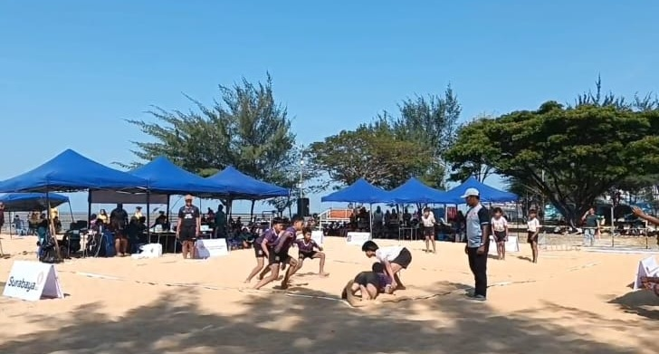
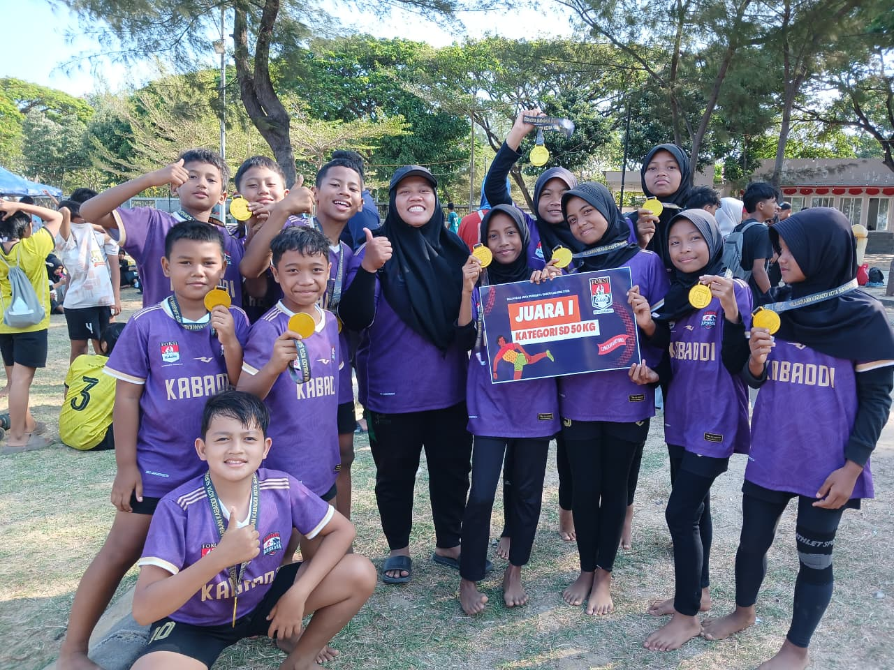

Kabaddi Arskasa SDN Kebonagung 1 Sukses Meraih Dua Gelar Juara 1 pada KEJURKOT Kabaddi Beach Surabaya 2026
Kabar membanggakan kembali hadir dari SDN Kebonagung 1 Sukodono. Melalui klub olahraga Kabaddi Arskasa, peserta didik berhasil menunjukkan kemampuan terbaik dan mengukir prestasi membanggakan dalam ajang KEJURKOT Kabaddi Beach Surabaya 2026.
Kejuaraan ini diselenggarakan oleh FOKSI Kota Surabaya dan menjadi salah satu momentum penting bagi para atlet muda untuk mengembangkan kemampuan dalam olahraga kabaddi. Tidak hanya menjadi ajang untuk mencari juara, kompetisi ini juga menjadi tempat bagi para peserta untuk belajar tentang keberanian, kedisiplinan, kerja sama, konsentrasi, dan sportivitas.
Sejak persiapan hingga pertandingan berlangsung, para atlet Kabaddi Arskasa menunjukkan kesungguhan yang luar biasa. Latihan yang dilakukan secara konsisten menjadi bekal penting untuk menghadapi pertandingan. Setiap gerakan, strategi, dan kerja sama tim terus diasah agar para atlet mampu tampil maksimal ketika berada di arena pertandingan.


Dalam setiap pertandingan, para atlet harus mampu menjaga konsentrasi, keberanian, dan kekompakan. Tantangan yang dihadapi tidak membuat mereka gentar. Justru setiap tantangan menjadi motivasi untuk memberikan penampilan terbaik.
Dengan semangat pantang menyerah, para atlet terus berjuang dari awal hingga akhir pertandingan. Mereka membuktikan bahwa keberhasilan tidak datang secara instan, melainkan melalui latihan, kerja keras, kedisiplinan, kekompakan, dan doa.
Perjuangan tersebut akhirnya membuahkan hasil yang sangat membanggakan. Kabaddi Arskasa berhasil menempatkan atlet-atlet terbaiknya di posisi tertinggi dan membawa pulang dua gelar Juara 1.
🥇 Dua Gelar Juara untuk Kabaddi Arskasa
JUARA 1 PUTRA
Kategori 50 kg
JUARA 1 PUTRI
Kategori 50 kg
Keberhasilan meraih Juara 1 putra dan Juara 1 putri kategori 50 kg menjadi pencapaian yang sangat berarti bagi Kabaddi Arskasa dan SDN Kebonagung 1. Prestasi tersebut sekaligus menjadi bukti bahwa kegiatan ekstrakurikuler olahraga di sekolah dapat menjadi wadah yang positif untuk mengembangkan bakat dan potensi peserta didik.
Lebih dari sekadar mendapatkan medali, pengalaman bertanding memberikan banyak pelajaran berharga bagi para atlet. Mereka belajar bagaimana menghadapi tekanan pertandingan, menghargai lawan, menerima hasil dengan lapang dada, serta tetap berusaha memberikan yang terbaik meskipun menghadapi berbagai tantangan.
Nilai-nilai tersebut sejalan dengan semangat pendidikan di SDN Kebonagung 1 yang tidak hanya berfokus pada kemampuan akademik, tetapi juga mendorong peserta didik untuk berkembang melalui berbagai kegiatan positif. Olahraga menjadi salah satu sarana untuk membentuk karakter siswa agar lebih disiplin, percaya diri, bertanggung jawab, dan mampu bekerja sama dengan orang lain.
Di balik prestasi yang diraih para atlet, terdapat kerja keras dan pendampingan dari para pelatih. Klub Kabaddi Arskasa dibimbing oleh Richa Putri Agustina dan Moch. Reza Febriliant Arifin yang terus memberikan arahan, motivasi, serta pembinaan kepada para atlet.
Peran pelatih sangat penting dalam mempersiapkan atlet, mulai dari latihan teknik dasar, strategi permainan, kekuatan fisik, kekompakan tim, hingga membangun mental bertanding. Dukungan dan bimbingan tersebut menjadi bagian penting dari perjalanan para atlet hingga mampu berdiri di podium juara.
Prestasi ini juga menjadi motivasi bagi seluruh peserta didik SDN Kebonagung 1 untuk berani mengembangkan potensi masing-masing. Setiap anak memiliki kesempatan untuk berprestasi melalui bidang yang diminatinya. Dengan latihan yang tekun, semangat yang kuat, dukungan guru dan orang tua, serta kemauan untuk terus belajar, berbagai prestasi dapat diraih.
Kemenangan Kabaddi Arskasa diharapkan tidak berhenti sampai di sini. Prestasi ini menjadi awal untuk terus berkembang dan meraih pencapaian yang lebih tinggi pada berbagai kejuaraan berikutnya. Para atlet diharapkan tetap rendah hati, terus berlatih, menjaga kesehatan, menjunjung tinggi sportivitas, dan selalu membawa nama baik SDN Kebonagung 1.
📋 Informasi Kejuaraan
🏷️ Nama Klub: Kabaddi Arskasa
🏆 Nama Kejuaraan: KEJURKOT Kabaddi Beach Surabaya 2026
🏢 Penyelenggara: FOKSI Kota Surabaya
🥇 Prestasi Putra: Juara 1 Kategori 50 kg
🥇 Prestasi Putri: Juara 1 Kategori 50 kg
👩🏫 Pelatih: Richa Putri Agustina
👨🏫 Pelatih: Moch. Reza Febriliant Arifin
Selamat kepada seluruh atlet Kabaddi Arskasa SDN Kebonagung 1 atas keberhasilan meraih Juara 1 Putra dan Juara 1 Putri kategori 50 kg pada KEJURKOT Kabaddi Beach Surabaya 2026.
Semoga prestasi ini menjadi inspirasi bagi seluruh peserta didik untuk terus berani bermimpi, berani mencoba, berani berjuang, dan tidak mudah menyerah.
Teruslah berlatih dengan penuh semangat, junjung tinggi sportivitas, hormati lawan, dan jadikan setiap pertandingan sebagai pengalaman untuk menjadi lebih baik.
🏆 SATU TIM • SATU SEMANGAT • SATU TUJUAN • RAIH PRESTASI! 🏆
💙 SDN KEBONAGUNG 1 — BERPRESTASI, BERKARAKTER, DAN PANTANG MENYERAH! 💙